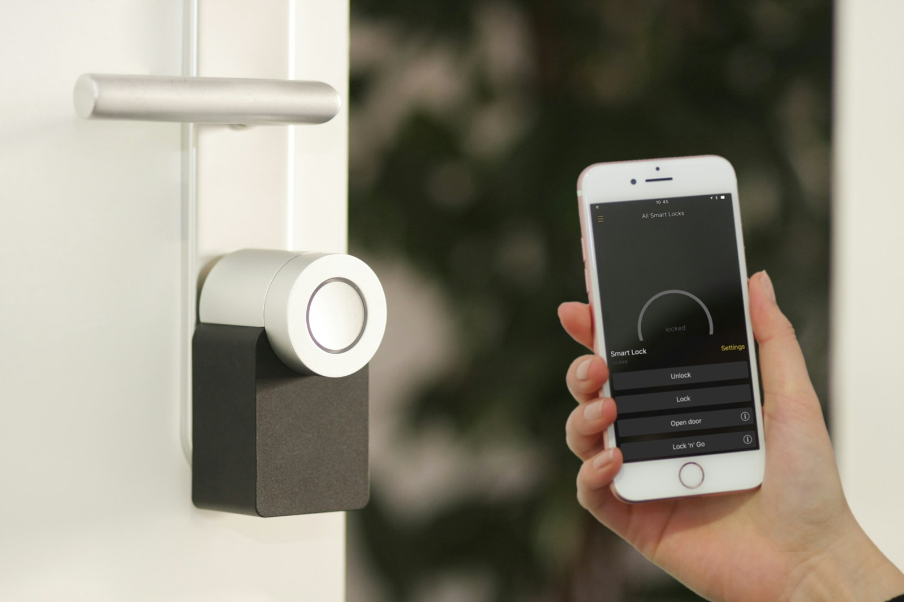
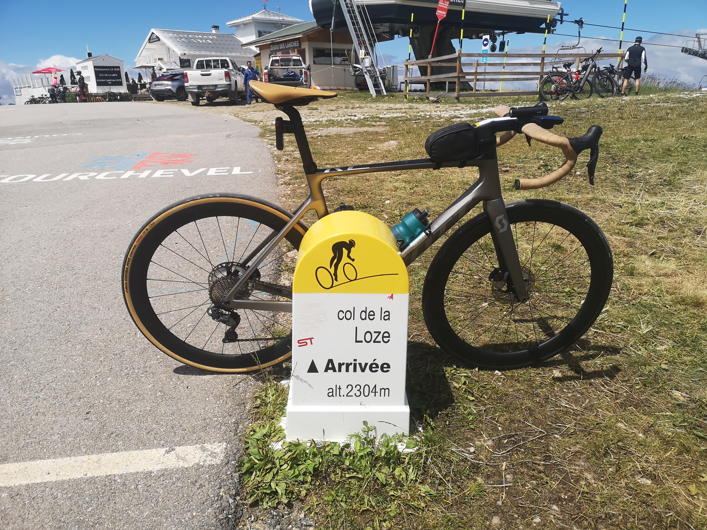
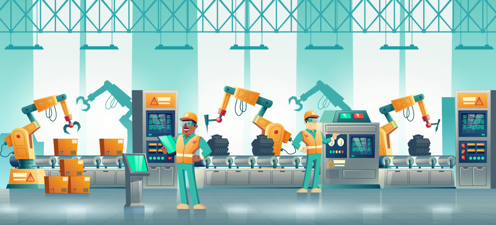

Le Bois
Passionné par le travail du bois et la fabrication artisanale. Ma pratique régulière m’a appris la rigueur de la conception, l’agilité face aux imprévus, et la satisfaction du travail bien pensé, étape par étape.
Document privé — reprise d’une entreprise à taille humaine.
Passionné par le travail du bois et la fabrication artisanale. Ma pratique régulière m’a appris la rigueur de la conception, l’agilité face aux imprévus, et la satisfaction du travail bien pensé, étape par étape.

Curieux et technophile, je teste et intègre continuellement des solutions Smart Home. Je sais évaluer la robustesse technique d’une offre et la valeur d’usage qu’elle apporte aux clients (B2C/B2B).

Pratiquant engagé (voile, vélo, wingfoil…), j’ai une compréhension intuitive des exigences de l’équipementier. J’allie regard de l’utilisateur final et vision de développement produit.

Attiré par les défis d’optimisation et d’innovation des parcours de production. Mon esprit ingénieux et structuré s’épanouit dans la résolution de problématiques industrielles concrètes.
Ouverture et développement de l’agence lyonnaise, gestion du P&L, recrutement et management (jusqu’à 50 collaborateurs). Création d’un portefeuille de +50 clients (Métropole de Clermont, Départements 69 et 93, SDMIS, Frénéhard). Structuration des offres de conseil (stratégie SI, organisation, PMO).
Prospection, développement commercial et gestion d’un P&L (~2 M€). Recrutement et formation de consultants. Pilotage et sécurisation de projets complexes pour grands comptes (EDF, Véolia, Eau du Grand Lyon).
Accompagnement stratégique, AMOE et AMOA pour grands comptes. Mise en place d’outils de gestion de portefeuilles de projets (PPM) pour EDF. Pilotage documentaire chez Renault Trucks.
Gestion d’une agence de location de véhicules de prestige et deux-roues. Management de 4 salariés, suivi financier (P&L), création du système d’information de la franchise (40 agences).